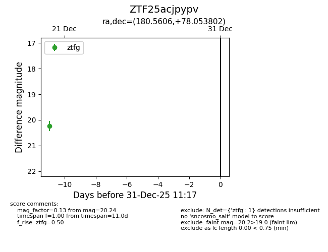
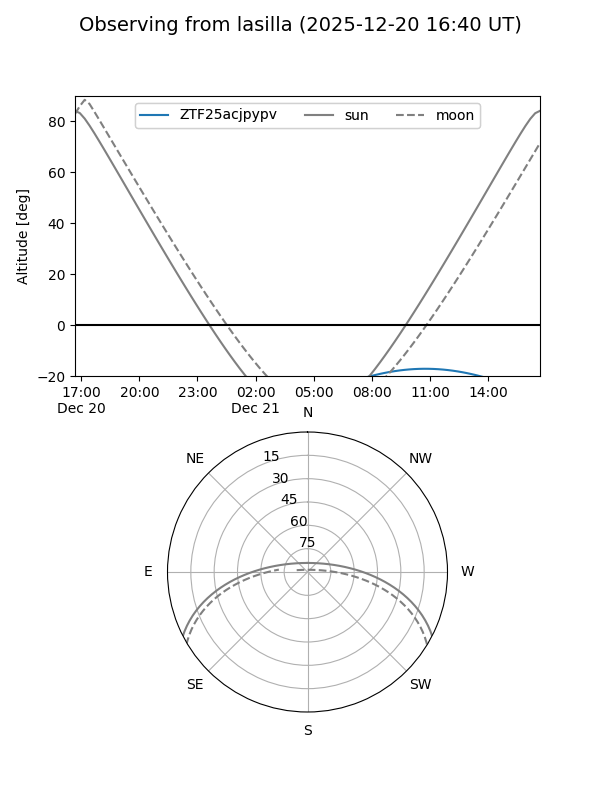
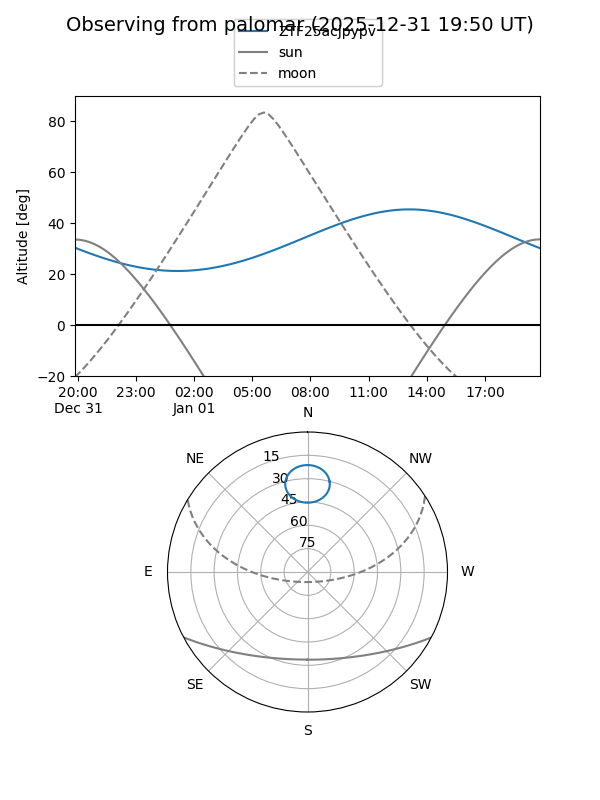

ZTF25acjpypv
Target ZTF25acjpypv at 2026-01-09 12:49
Aliases and brokers:
FINK: link
Lasair: link
ALeRCE: link
alt names
ZTF25acjpypv (ztf,fink_ztf)
Coordinates:
equatorial (ra, dec) = 180.5606,+78.05380
equatorial (HMS+DMS) = 12:02:14.54,+78:03:13.69
galactic (l, b) = (126.1736,+38.76310)
Flags:
Photometry:
last ztfg=20.24
1 ztfg detections
Lightcurve

Visibility


Additional plots